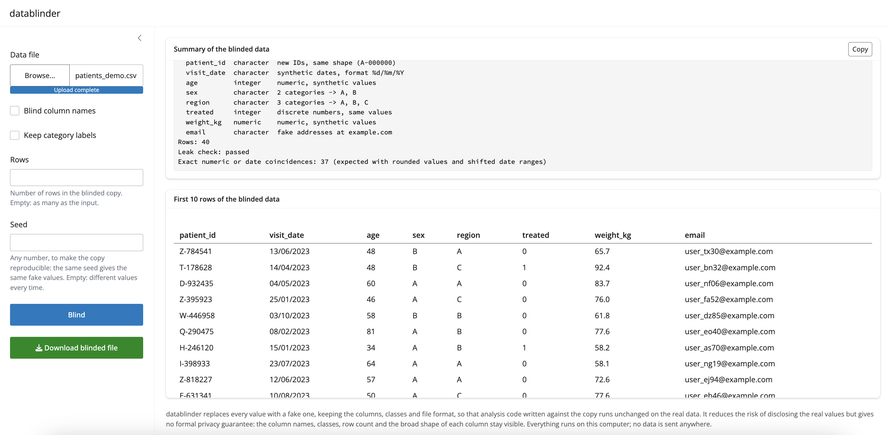

“I have this data. I want an analysis and an output. I want an AI to write the code. But the data is sensitive or proprietary, so I can’t drop it into a chat.”
datablinder turns a data file into a blinded copy: an anonymised, synthetic look-alike with the same columns, the same R classes, the same file format, values that look roughly similar, and not one real value in it. Share the copy with a collaborator or an AI assistant, get code back, run that code on the real file.
There is one thing it has to get right, and everything in the package is built around it: code written against the blinded copy runs unchanged on the real data. Integers stay integers, a 0/1 column stays 0/1, dates keep their format, a factor keeps its number of levels, and no column ever changes class.

Install
# install.packages("remotes")
remotes::install_github("agallinat/datablinder")Not on CRAN yet.
A quick look
library(datablinder)
blind_file("patients.csv")
#> Blinded copy written to patients_blinded.csv
#>
#> patient_id character new IDs, same shape (A-000000)
#> visit_date character synthetic dates, format %d/%m/%Y
#> age integer numeric, synthetic values
#> sex character 2 categories -> A, B
#> region character 3 categories -> A, B, C
#> treated integer discrete numbers, same values
#> weight_kg numeric numeric, synthetic values
#> email character fake addresses at example.com
#> Rows: 40
#> Leak check: passedpatients_blinded.csv is a comma-separated file with those eight columns, in that order, forty rows long, missing values written the way the input wrote them:
patient_id,visit_date,age,sex,region,treated,weight_kg,email
M-794949,18/04/2023,57,B,A,0,78.7,user_zp98@example.com
M-889029,18/09/2023,33,A,C,1,80.7,user_wd06@example.com
F-753189,05/07/2023,27,B,A,0,61,user_kw07@example.comThat summary is the other half of the point. It describes the blinded data only, so it is safe to paste into a chat along with the file, and it tells an AI what each column is before it writes a line of code.
Three ways to use it
In R
blind_file("patients.xlsx") # -> patients_blinded.xlsx
blind_file("data.sav", output = "shared/fake.sav", blind_names = TRUE,
rows = 200, seed = 1)
fake <- blind_data(my_data_frame) # data frame in, data frame out
attr(fake, "blind_summary") # the same summaryblind_file() is blind_data() with a reader and a writer around it. Both return the summary; blind_data() hangs it on the result as an attribute.
In a browser
run_app()A small app on 127.0.0.1, so the file never leaves the computer. Choose a file, set the options, press Blind, read the summary, copy it with one button, look at the first ten blinded rows, download the copy. In RStudio it is also under Addins > Blind a data file. It is the app in the screenshot above.
From a terminal
Nothing to install beyond the package itself:
If you do this often, install_cli() copies a small wrapper script into a directory on your PATH (and writes the .cmd shim Windows needs). It never uses sudo and never edits a shell configuration file; it tells you plainly whether the shell will find the command, and what to add to your PATH if it will not.
The exit status is non-zero if the file cannot be read or written, or if the leak check fails.
The four options
| Argument | Default | What it does |
|---|---|---|
blind_names |
FALSE |
Rename the columns to col_01, col_02… and drop SPSS/Stata variable labels, which often describe sensitive content |
keep_labels |
FALSE |
FALSE: category values and factor levels become A, B, C… TRUE: keep the real ones, for when code must filter on them (region == "North") |
rows |
NULL |
How many rows to generate. NULL means as many as the input |
seed |
NULL |
A seed, for a copy that can be reproduced. Your session’s .Random.seed is put back as it was found |
That is the whole interface. Detection thresholds are internal constants, and there is no configuration file.
Files it reads and writes
| Format | Notes |
|---|---|
CSV / TSV (.csv, .txt, .tsv, .tab) |
Delimiter, decimal mark, encoding (UTF-8 or Latin-1), byte order mark, line endings and missing-value text all come back the way they went in |
Excel (.xlsx, .xlsm, .xls) |
Every sheet is blinded, sheet names kept. Written as .xlsx, the only Excel format that can be written |
SPSS (.sav, .zsav), Stata (.dta) |
Value labels, variable labels and display formats kept |
R (.rds) |
Must hold a data frame; its class (data.frame, tibble, data.table) is kept |
Parquet (.parquet) |
Needs the suggested arrow package |
The copy goes next to the input as <name>_blinded.<ext> unless output says otherwise.
What happens to each column
Types are decided by values, not only by storage class: a double holding nothing but 0 and 1 is binary, and a double holding whole numbers with few distinct values is discrete. That is what keeps table(x), x == 1 and factor(x) behaving the same way on both files.
| Detected as | Blinded as |
|---|---|
| Continuous numeric | Drawn from a smoothed inverse CDF of the real column, so the shape survives; slightly shifted minimum and maximum, the same number of decimals, the same sign, the same share of exact zeros, the same class |
| Discrete numeric (whole numbers, few distinct values, including 0/1) | The same set of values in similar proportions |
Factor, ordered factor, character with few distinct values, haven_labelled
|
The same number of levels or categories in similar proportions, relabelled A, B, C… unless keep_labels. Order, unused levels and haven codes kept |
| Logical | A similar share of TRUE
|
Date, POSIXct
|
Dates in a slightly shifted range, same timezone. Dates that were text in the file stay text, in the same format |
Identifier (nearly all values distinct, or a name like patient_id) |
New unique values of the same shape (P-004213 -> M-794949); repeated IDs repeat a similar number of times |
| Email, phone, URL | Obviously fake values of the same shape, at example.com
|
| Fixed-shape text (postcodes, codes with leading zeros) | Random letters, digits and punctuation in the same positions |
| Free text | Placeholder words of similar length |
Constant, all-NA
|
All-NA stays; a constant number stays; constant text is replaced |
Every column keeps its share of missing values. Columns are blinded independently: relationships between them are deliberately not preserved.
The leak check
Every run is checked before anything is written, and the result is in the summary.
Character, factor, label and identifier columns are built from the shape of the real values rather than the values themselves, so any overlap with the real column is a bug: it is a hard failure, and nothing is written. Relabelled categories are checked for having actually been relabelled.
Exact matches in continuous numeric, date and free-text columns are counted and reported, not forbidden. They carry no information: a column of ages rounded to whole years has only so many values to go round, date ranges are shifted rather than moved, and placeholder words come from a fixed list. A count here is expected and is not a leak of anything an AI could use:
Leak check: passed
Exact numeric or date coincidences: 33 (expected with rounded values and shifted date ranges)Limits
Read this part.
-
This is not a formal privacy guarantee. It reduces the risk of disclosing the real values. The column names, the classes, the row count, the share of missing values, the number of categories and the broad shape of every distribution all stay visible, on purpose, because that is what makes the code work. If the structure itself is confidential, use
blind_names = TRUEand think again about sharing the file at all. - Read the summary before you share the file. It is the list of decisions the package made. A column blinded as a category when it is really an identifier, or as free text when it is really a code, is the case to catch, and the summary is where you see it.
-
keep_labels = TRUEkeeps real category labels. Only use it when those labels are not themselves sensitive. - The blinded data is for writing code, not for analysis. Since columns are blinded independently, no correlation, model coefficient, group difference or cross-tabulation on the copy means anything about the real data. Results will be structurally similar and numerically meaningless.
- Code that depends on the content of free text will not work. Free text becomes placeholder words. Neither will code that relies on relationships between columns, or on a particular real value existing.
-
Detection needs something to look at. On a table of five rows there is little to tell an identifier from a measurement; check the summary, and use
rowsto make the copy longer if the code you get back needs room. - No network access, and no AI or LLM calls, anywhere in the package. The reading, blinding and writing all happen on your machine. Sharing the blinded file with an AI is a thing you do afterwards, deliberately.
Not in this version: preserving relationships between columns, per-column overrides, reading from a database, and complex objects such as Seurat or SingleCellExperiment.
Documentation
Full documentation is at agallinat.github.io/datablinder, including three longer articles:
- Sharing sensitive data with an AI assistant — the whole workflow end to end, with a prompt to start from
- What datablinder does not protect you from — read this before deciding you are allowed to share a file
-
Other packages for fake and anonymised data — how this compares to
synthpop,sdcMicro,simstudyand others, and when one of those is the right tool instead
Credit
FakeDataR (MIT) came first and has a similar goal. Three of its ideas are used here: recognising sensitive columns by matching their names against a word list, printing a short description of the fake data to paste into a chat, and validating the copy against the original by comparing classes and missingness. Parts of the name word lists in R/detect.R are adapted from it.
datablinder differs in what it refuses to do. FakeDataR draws numeric columns uniformly between the real minimum and maximum or resamples the real values, turns 0/1 doubles into decimals, keeps real category labels by default, returns 30 rows instead of the input’s row count, and changes types by default (percent strings to numbers, yes/no text to a factor, date text to POSIXct). Each of those breaks code written against the copy when it meets the real data, and each has a test here proving datablinder does not do it.
License
MIT. See LICENSE.md.